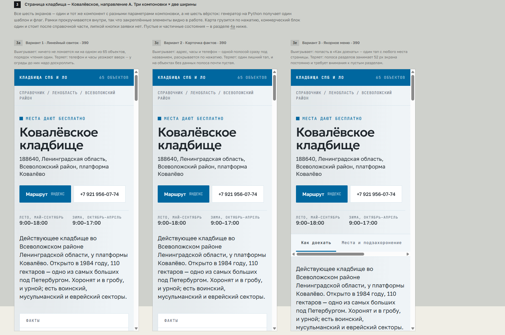
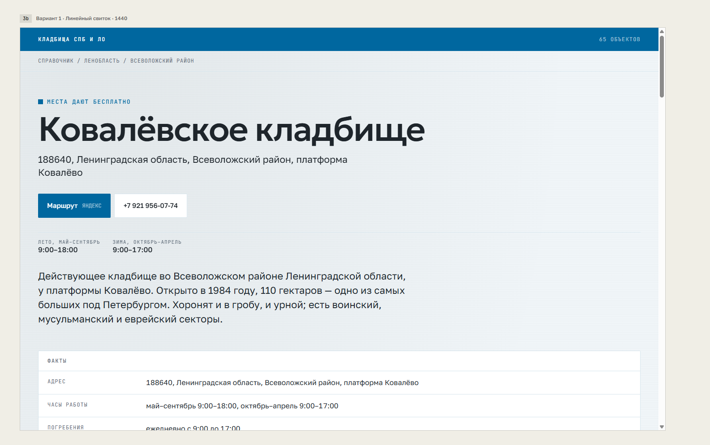
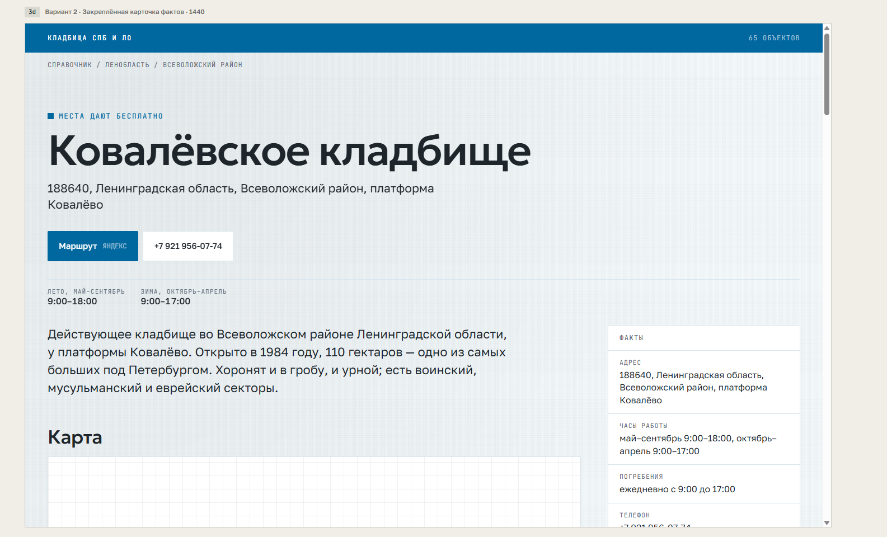
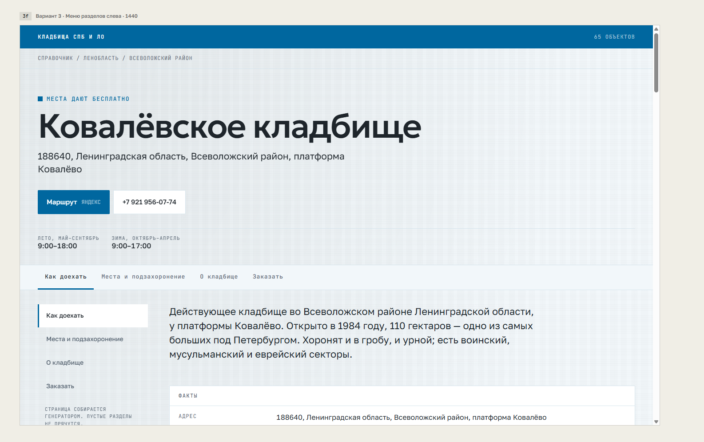

Что уже договорились менять, что осталось выбрать и как это выглядит. Здесь же — живая сборка на 124 страницах, чтобы смотреть с телефона без туннеля.
Обновлено 11 сентября 2026
Переверстываем страницу кладбища, хабы, справочные статьи, метро и подборки. Главная остаётся как есть: она сверена с макетом попиксельно, расхождение 0,06%, и служит эталоном для остальных.
Вместо свитка в один столбец — липкое меню разделов: вертикальное слева на широком экране, лентой вкладок на телефоне. Причина: человек приходит за часами, телефоном и дорогой, а свиток заставляет проскроллить мимо истории и документов.
Слияние источников, тексты 44 страниц, 16 историй и шесть правил проекта остаются без изменений. Меняются только шаблоны и CSS — они ни с чем, кроме данных, не связаны.
Поле есть на всех 124 страницах, обработчика нет: ввод ничего не делает. Либо убрать поле, либо сделать поиск по собранному индексу страниц. Неработающее поле на справочнике по смерти стоит дороже, чем на обычном сайте.
Спецификация дизайна требует второго состояния: крупно название кладбища, бренд — мелкой строкой слева. Сейчас шапка одна на весь сайт. Делаем по спецификации или оставляем единую.
На 499 строк стилей внутренних страниц приходится один медиазапрос — всё держится на резиновых сетках. Для таблиц, шагов и фактов нужна своя мобильная раскладка, иначе меню разделов на телефоне будет тесно.



